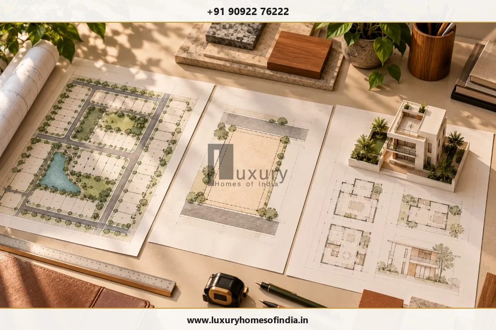

Can You Build on an Unapproved Plot in Chennai? Rules, Risks and Regularisation
Understanding Tamil Nadu 2017/2026 regularisation rules, CMDA portal process, sale deed title limits, waterbody restrictions, and building permit steps.
Executive Summary: Unapproved Plot Feasibility
Buying a plot and building a home are two separate decisions. A registered sale deed does not, by itself, establish that a plot has the required planning approval or that a proposed house can legally be constructed on it. In Chennai, unapproved plots must be evaluated for regularisation under Tamil Nadu's 2017 rules (as amended in 2025/2026). Regularisation is a two-stage process (layout-framework assessment + individual plot regularisation) and does not automatically grant building permission. Before committing construction funds, verify the property's title, planning status, land-use classification, and building-permit feasibility with a registered professional.
On this page:
Buying a plot and building a home are two separate decisions. A registered sale deed does not, by itself, establish that a plot has the required planning approval or that a proposed house can legally be constructed on it. Before investing in architectural design, site work or construction, you need to establish the property's title, planning status, permitted use and building-permission requirements.
In Chennai, an unapproved plot may form part of an unapproved layout or subdivision, have unresolved land-use restrictions, or lack compliant access. Some older plots may qualify for regularisation under the applicable Tamil Nadu framework, but eligibility depends on the rules, the property's history and its specific circumstances. Regularisation is not automatic, and it does not necessarily grant permission to build a house. This guide explains how to check an unapproved plot, which documents to collect, how regularisation differs from building approval and what to resolve before committing substantial funds to your home project.

1. What Does an Unapproved Plot Mean?
An unapproved plot is not necessarily a plot without a building plan. The issue may concern the planning approval for the land division itself.
Three situations should be distinguished:
- An unapproved layout: Land has been divided into multiple plots without the required prior approval or concurrence of the competent planning authority.
- An unapproved subdivision: Land has been divided into plots in circumstances classified as a subdivision under the applicable rules. In the Chennai Metropolitan Planning Area, the original 2017 regularisation rules distinguish subdivisions of up to eight plots from layouts comprising more than eight plots. The applicable classification must be checked against the current rules and the property's circumstances.
- An approved layout without building permission: The layout may be approved, but the proposed house must still satisfy the applicable building regulations and obtain the required permission.
The first question is not simply whether a plot is approved. It is: Which approval is missing, and which authority is responsible for it?
2. Can You Legally Build on an Unapproved Plot in Chennai?
Do not start construction until the plot's development status has been verified and the required building permission has been obtained.
The answer depends on several separate checks:
- Title: Do the ownership documents establish a legally supportable claim to the property?
- Planning status: Is the layout or subdivision approved, or does the plot require regularisation?
- Eligibility: If regularisation is needed, does the property meet the applicable conditions?
- Land use: Is the proposed residential use permitted?
- Site restrictions: Are there restrictions involving public land, waterbodies, access, road alignments or other development controls?
- Building permission: Can the intended house comply with the applicable rules and receive the necessary approval?
An application acknowledgement, a seller's assurance or an in-principle layout approval should not be treated as a final building permit.
3. Does a Registered Sale Deed Mean the Plot is Approved?
No. A registered sale deed records a property transaction, but it does not independently prove planning approval, permitted land use or the right to construct a house.
Title Deed vs. Planning Approval Verification Matrix
| Verification Question | Why It Matters Before Construction |
|---|---|
| Is the sale deed registered? | Establishes an important part of the documented transaction history. |
| Is the title satisfactory? | Helps identify ownership issues, competing claims or defects requiring legal advice. |
| Is the layout or subdivision approved? | Establishes the planning status of the underlying land division. |
| Is the plot eligible for regularisation? | Determines whether a relevant statutory route may be available. |
| Is residential construction permitted? | Helps establish whether the intended use and building proposal can proceed. |
A patta, tax receipt or other individual record should not be treated as a substitute for checking the complete title and planning position.
Before proceeding, ask a qualified property lawyer to review the title and a registered architect or other appropriately qualified professional to assess the planning and building-permission requirements.
4. Can an Unapproved Plot Be Regularised in Tamil Nadu?
Some plots may qualify under the Tamil Nadu Regularisation of Unapproved Layouts and Plots Rules, 2017, as amended. Regularisation depends on the applicable conditions, the type of land division and the property's documentary history.
The original framework uses a historical cut-off linked to registered sale or title deeds dated on or before 20 October 2016. It also identifies categories of land that cannot be regularised under the rules.
A January 2026 amendment to the rules is relevant to the application process. Property owners should read the complete amendment and verify the current procedure, eligibility conditions and application category through the competent authority before relying on any deadline or application route.

Three points are particularly important:
- A historical cut-off does not guarantee that a particular plot qualifies.
- Regularisation of a layout framework does not automatically regularise every individual plot.
- Regularisation of a plot does not automatically grant permission to construct the proposed house.
Use the official CMDA regularisation portal to review the available application categories and procedural information for properties within its jurisdiction. If the property is outside that jurisdiction, identify the competent planning authority before applying.
5. Which Plots May Face Regularisation Restrictions?
The original 2017 rules identify several categories that cannot be regularised under that framework. These include plots located in public waterbodies, government poramboke land and land reserved for specified open spaces in approved layouts, along with certain other restricted circumstances.
The exact legal status of the land and the application of current provisions must be confirmed for each property.
Investigate whether the plot:
- Lies in a channel, canal, tank, lake, river or another public waterbody.
- Is classified as government poramboke land.
- Encroaches on a public road or land the applicant does not own.
- Occupies land reserved for a park, playfield or open-space reservation (OSR) in an approved layout.
- Is affected by a specified road or rail alignment.
- Falls beneath a high-tension or extra-high-voltage electric line or tower-line alignment covered by the applicable rules.
- Has an access or boundary issue that could affect eligibility or development.
Do not assume that payment of charges or submission of an application can overcome a restriction that legally prevents regularisation.
A site survey, relevant land records and confirmation from the competent authority are particularly important where the site has unclear boundaries, disputed classification or physical constraints.
6. How to Check Whether Your Plot Is Approved

Complete the following checks before finalising your house design or signing a construction contract.
Step 1: Collect the property documents
Gather the registered sale deed, available parent documents, survey number, plot number, village details, patta and relevant revenue records. Obtain any layout or subdivision plan supplied by the seller. Check that the records identify the same land and boundaries.
Step 2: Identify the competent authority
Establish whether the property falls within the Chennai Metropolitan Planning Area and whether CMDA, the relevant local body or another planning authority handles the particular approval. Do not assume that a property described commercially as being in Chennai automatically falls under the same approval jurisdiction as every other property in the region.
Step 3: Verify layout and plot status
Request the actual approved layout plan, relevant proceedings or regularisation order. Compare the plot number and boundaries against the land records and the site. If the seller claims that regularisation has been completed, request the final order and plan. Verify them with the competent authority rather than relying solely on a screenshot, informal letter or verbal assurance.
Step 4: Check land use and site constraints
Confirm the permitted use and investigate relevant restrictions involving public land, waterbodies, access, road alignments and other applicable controls. Where the site is low-lying or flood-prone, obtain appropriate site-specific advice on drainage, levels and design. Planning approval alone should not be treated as proof that every physical risk has been resolved.
Step 5: Assess building permission
Ask a registered architect or appropriately qualified professional to evaluate the proposed house against the applicable development and building rules. Depending on the site and building category, the review may need to consider setbacks, road width, access, plot dimensions, permitted floor area, height, parking, drainage and additional clearances.
7. How Does Plot Regularisation Work?
The procedure depends on whether the application concerns an individual plot, a subdivision or a layout, and on the current rules and jurisdiction.
The CMDA-hosted portal describes a two-stage process for relevant applications:
- Layout-framework assessment: The relevant planning authority examines the layout and may issue an in-principle approved layout framework plan.
- Individual plot regularisation: The concerned local body considers the plot application, verifies ownership and collects the applicable balance regularisation and other charges before issuing the relevant order and plan.
An in-principle layout framework approval is not the same as final regularisation of every plot. The portal also distinguishes applications for a plot in a layout, a plot in a subdivision and a layout application.
What Documents May Be Required?
The current checklist should be confirmed through the official portal and competent authority. Depending on the application, you may need:
- Registered sale deed or title deed.
- Relevant parent documents and ownership records.
- Plot number, survey number and site details.
- Existing layout or subdivision plan.
- Supporting land and revenue records (Patta, FMB sketch).
- Prescribed application forms and declarations.
- Additional evidence requested to establish eligibility.
- Receipts for applicable charges.
Do not assume that this is a complete or universally applicable checklist. Confirm the current requirements for the exact application type before submitting documents or paying charges.
8. What Happens After a Plot Is Regularised?
Once the relevant final regularisation order and plan have been issued, the next task is to establish whether the proposed house can obtain the required building permission.
The process may include:
- Verifying the final regularisation order and approved plan.
- Confirming permitted land use and site constraints.
- Commissioning a site survey and preparing the architectural design.
- Checking the relevant development controls and building requirements.
- Applying for the required building permission.
- Obtaining any additional site-specific clearances.
- Starting construction only after the necessary written permissions are in place.
A regularised plot is not a guarantee that every proposed building design will be accepted. The house must still be assessed against the rules applicable to its site, use and building category.
9. What Are the Risks of Building Before Approval?
Starting construction before resolving the planning position can create financial, legal and design uncertainty:
- Building-permission problems: If the plot is not eligible for regularisation or the proposed house fails applicable requirements, building permission may be refused.
- Possible enforcement action: Unauthorised development may attract action under the applicable planning and building laws. The consequences depend on the circumstances and governing provisions.
- Utility difficulties: Do not assume that utility connections will be available simply because a structure has been built. Verify the applicable rules and service requirements.
- Design changes and additional expenditure: Restrictions affecting access, setbacks, land use or usable plot area can require redesign or make the intended house impractical.
- Resale and financing complications: Buyers, lenders and professional advisers may ask for consistent title, planning and building-permission records. Missing or inconsistent documents can complicate due diligence.
The prudent approach is to resolve the land and approval status before commissioning detailed construction drawings or committing substantial funds.
10. What Should You Do If You Already Own an Unapproved Plot?
Do not assume the plot is either automatically buildable or permanently unusable. Establish the facts in the right order:
- Collect the sale deed, available title records and plot details.
- Confirm the layout or subdivision status with the competent authority.
- Check whether the property meets the current regularisation eligibility conditions.
- Investigate waterbody, government-land, access and other applicable restrictions.
- If eligible, follow the applicable process and obtain the relevant final order.
- Have a qualified professional assess the proposed house.
- Obtain the required building permission before starting construction.
If the title, land classification or eligibility is disputed, consult a qualified property lawyer and the competent planning authority before paying charges or commissioning detailed drawings.
Need Assistance Verifying Your Chennai Plot Status?
Speak with Luxury Homes of India’s residential architectural and planning consultants to review your plot regularisation status, CMDA framework compliance, and building-permission roadmap.
11. Frequently Asked Questions
Verify the Plot Before Planning Your Home
An unapproved plot should not automatically be treated as either buildable or permanently unusable. The answer depends on the property's title, layout and plot status, eligibility under the current regularisation framework, land-use restrictions and the building permission required for the proposed house.
Before finalising an architectural design or starting site work in Chennai, resolve these questions with the competent authority and appropriately qualified professionals. Establishing the approval position early can help you avoid committing construction funds before a material land or planning issue is understood.
Disclaimer: This article provides general homeowner information, not legal advice. Regularisation eligibility and building-permission requirements must be verified for the specific plot under the current rules.